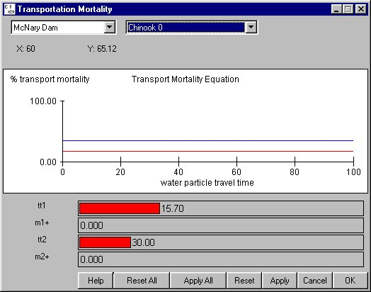

Transport Mortality Equation: Relating Transport Mortality to Flow
Selecting Dam Transport Mortality Equation opens a window for specifying a relationship between water particle travel time (WPTT) and transport survival. The relationship is based on the assumption that changes in flow affect how well fish survive transportation. You can set four parameters in the Transport Mortality Equation window:
Transport Mortality Equation opens a window for specifying a relationship between water particle travel time (WPTT) and transport survival. The relationship is based on the assumption that changes in flow affect how well fish survive transportation. You can set four parameters in the Transport Mortality Equation window:
- tt1: Shorter of two WPTT values.
- m1+: Determines the increase over the base mortality level (set in the Mortality window) for transport that you want to associate with WPTT values of tt1 or shorter.
- tt2: Longer of the two WPTT values.
- m2+: Associates an increase over the base mortality level (set in the Mortality window) for transport where WPTT values are tt2 or longer.
Between tt1 and tt2, COMPASS interpolates in a linear fashion. This is an Equation Input window.

Transport Mortality Equation window